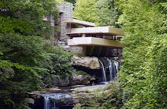

139. Fallingwater. Pennsylvania, US Frank Lloyd Wright. 1936-1939 CE Reinforced concrete, sandstone, stell, and glass.
- Form
- Cantilevered steel-supported porches extend over a waterfall
- The accent is on horizontal lines–as opposed to the verticality of much of twentieth-century architecture
- The architecture is in harmony with the site
- The living room contains a glass curtain wall around three of the four sides; the building embraces the woods around it
- The floor of the living room and the walls of building are made from the stone of the area
- The hearth os the center of the house, an outcropping of natural stones surrounds it
- The interior shows a suppression of space devoted to hanging a painting; Wright wanted the architecture to dominate
- The ground plan and design is irregular and complex
- Only two colors uses: light ochre for the concrete and Cherokee red for the steel
- Context
- Late expression of Prairie School ideas
- Function and Patronage
- Weekend retreat for the Kaufmann family, who owned a department store in Pittsburgh, Pennsylvania